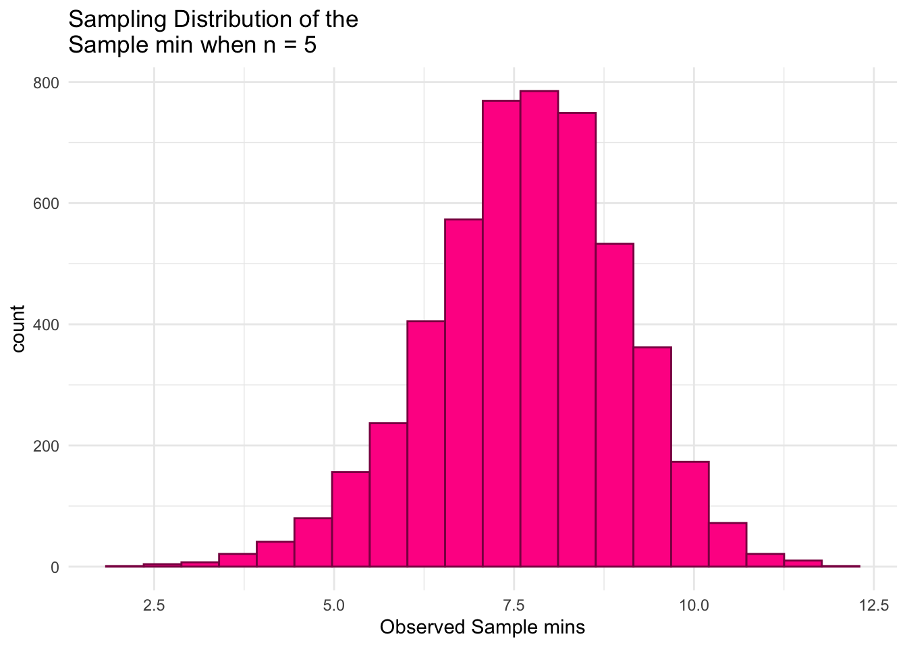
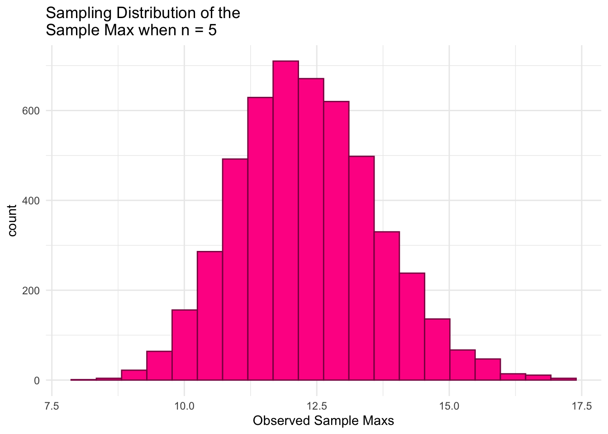
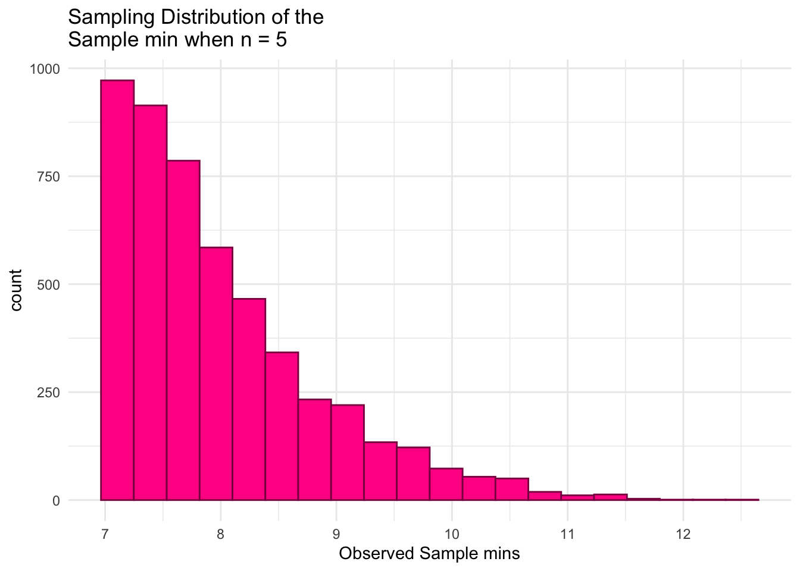
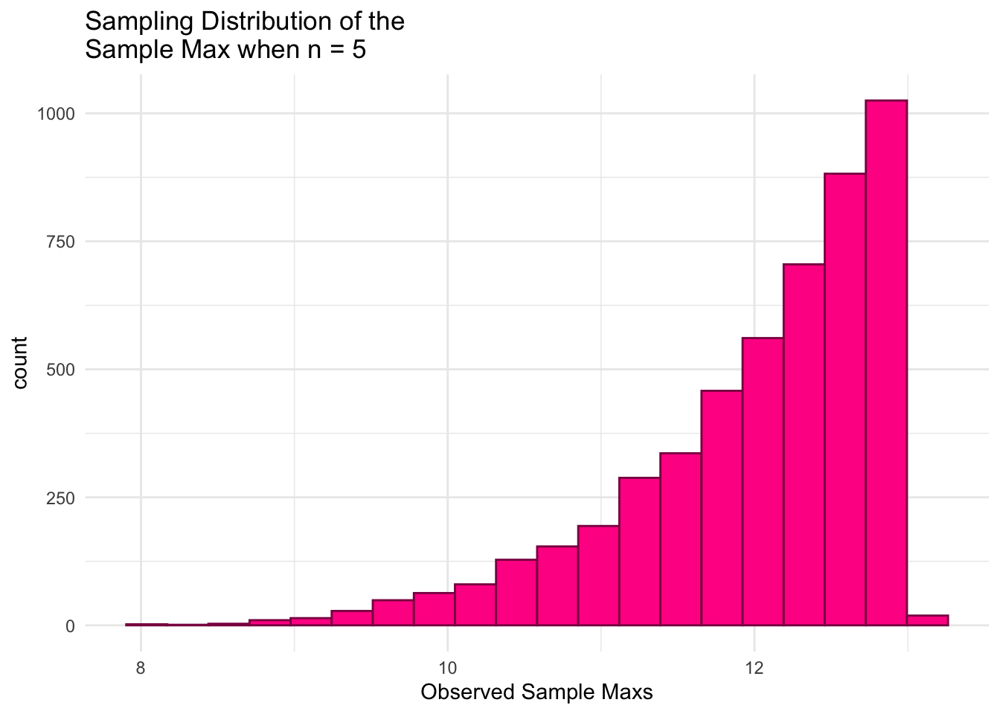
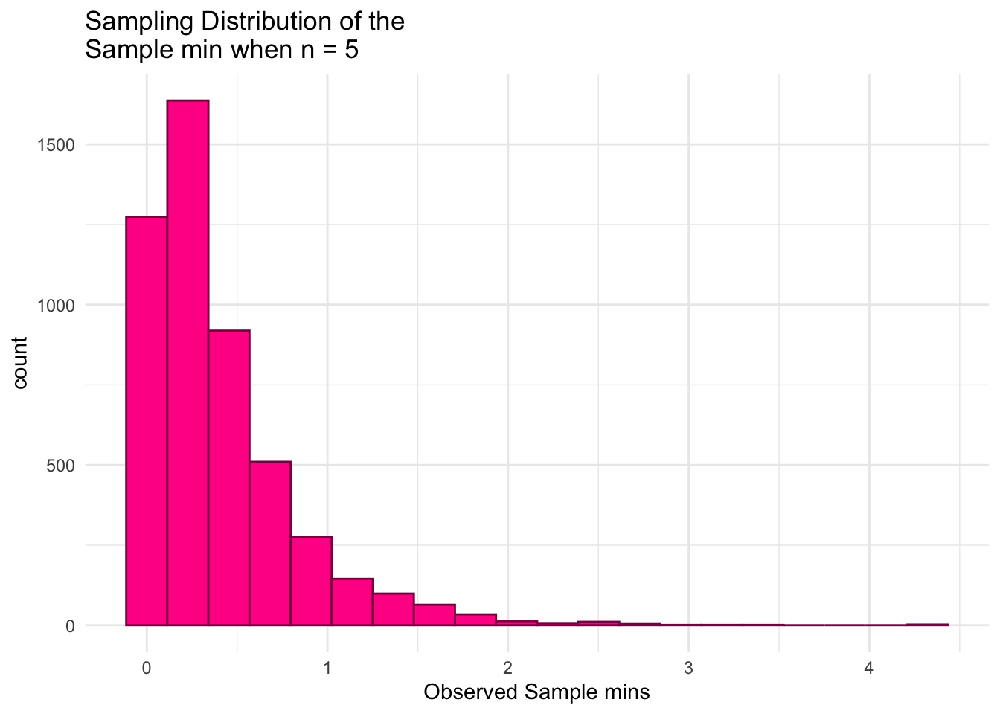
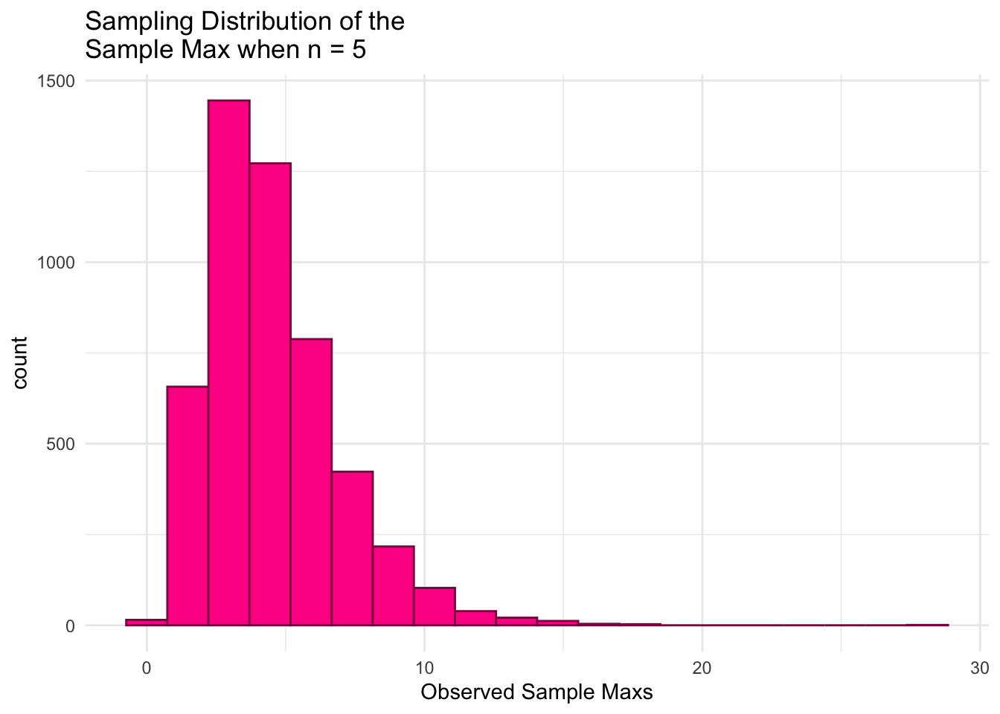
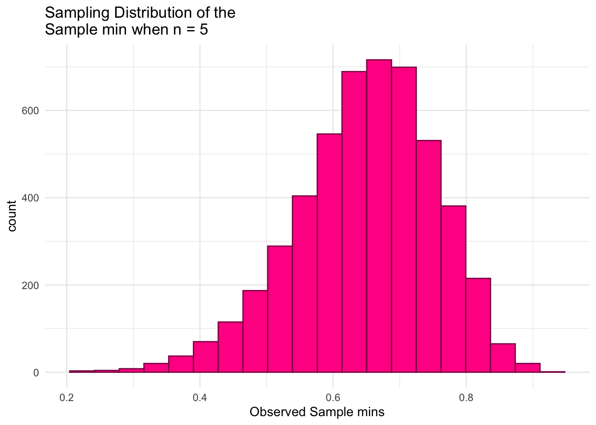
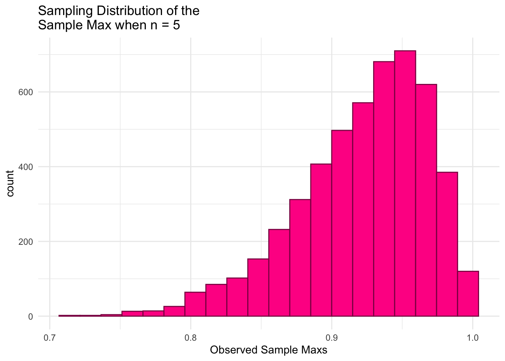
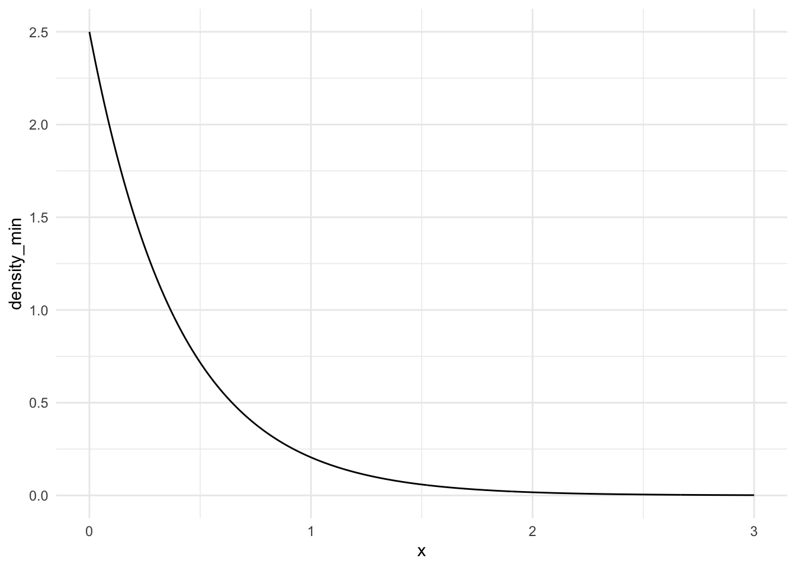
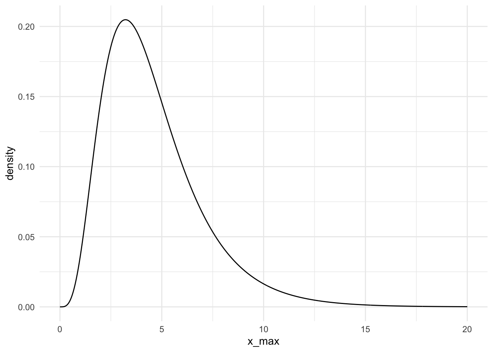

To save space I will only include one chunk of code showing how I created the simulation. For the other distributions the only difference is the alteration of “rnorm” and its arguments to the function corresponding to the correct distribution. (E.g rexp(n, lambda))
n<-5mu<-10sigma<-2generate_samp_min <-function(mu, sigma, n) { single_sample <-rnorm(n, mu, sigma) sample_min <-min(single_sample)return(sample_min)}generate_samp_max <-function(mu, sigma, n) { single_sample <-rnorm(n, mu, sigma) sample_max <-max(single_sample)return(sample_max)}nsim <-5000# number of simulations## code to map through the function. ## the \(i) syntax says to just repeat the generate_samp_mean function## nsim timesmins_norm <-map_dbl(1:nsim, \(i) generate_samp_min(mu = mu, sigma = sigma, n = n))maxs_norm <-map_dbl(1:nsim, \(i) generate_samp_max(mu = mu, sigma = sigma, n = n))## print some of the 5000 means## each number represents the sample mean from __one__ sample.mins_df_norm <-tibble(mins_norm)mins_df_norm
ggplot(data = mins_df_norm, aes(x = mins_norm)) +geom_histogram(color ="deeppink4", fill ="deeppink1", bins =20) +theme_minimal() +labs(x ="Observed Sample mins",title =paste("Sampling Distribution of the \nSample min when n =", n))

ggplot(data = maxs_df_norm, aes(x = maxs_norm)) +geom_histogram(colour ="deeppink4", fill ="deeppink1", bins =20) +theme_minimal() +labs(x ="Observed Sample Maxs",title =paste("Sampling Distribution of the \nSample Max when n =", n))

Unif(7,13)
ggplot(data = mins_df_unif, aes(x = mins_unif)) +geom_histogram(color ="deeppink4", fill ="deeppink1", bins =20) +theme_minimal() +labs(x ="Observed Sample mins",title =paste("Sampling Distribution of the \nSample min when n =", n))

ggplot(data = maxs_df_unif, aes(x = maxs_unif)) +geom_histogram(colour ="deeppink4", fill ="deeppink1", bins =20) +theme_minimal() +labs(x ="Observed Sample Maxs",title =paste("Sampling Distribution of the \nSample Max when n =", n))

Exp(0.5)
ggplot(data = mins_df_exp, aes(x = mins_exp)) +geom_histogram(color ="deeppink4", fill ="deeppink1", bins =20) +theme_minimal() +labs(x ="Observed Sample mins",title =paste("Sampling Distribution of the \nSample min when n =", n))

ggplot(data = maxs_df_exp, aes(x = maxs_exp)) +geom_histogram(colour ="deeppink4", fill ="deeppink1", bins =20) +theme_minimal() +labs(x ="Observed Sample Maxs",title =paste("Sampling Distribution of the \nSample Max when n =", n))

Beta(8,2)
ggplot(data = mins_df_beta, aes(x = mins_beta)) +geom_histogram(color ="deeppink4", fill ="deeppink1", bins =20) +theme_minimal() +labs(x ="Observed Sample mins",title =paste("Sampling Distribution of the \nSample min when n =", n))

ggplot(data = maxs_df_beta, aes(x = maxs_beta)) +geom_histogram(colour ="deeppink4", fill ="deeppink1", bins =20) +theme_minimal() +labs(x ="Observed Sample Maxs",title =paste("Sampling Distribution of the \nSample Max when n =", n))

Table of results
Table of Results
\(\text{N}(\mu = 10, \sigma^2 = 4)\)
\(\text{Unif}(\theta_1 = 7, \theta_2 = 13)\)
\(\text{Exp}(\lambda = 0.5)\)
\(\text{Beta}(\alpha = 8, \beta = 2)\)
\(\text{E}(Y_{min})\)
7.7
7.99
0.402
0.646
\(\text{E}(Y_{max})\)
12.3
12.0
4.56
0.922
\(\text{SE}(Y_{min})\)
1.35
8.59
0.396
0.108
\(\text{SE}(Y_{max})\)
1.38
8.4
2.41
0.0465
Questions
1. Compare the SE from the sampling distribution of the maximum and the minimum for these distributions
For both the normal and uniform distributions, the standard errors are quite similar, with the uniform having a slightly higher SE for the sampling distribution of the minimum compared to the maximum. The last two (Exponential and Beta) have Standard Errors that differ greatly between the two sampling distributions. Looking at exponential, there is a clearly higher SE produced from the sampling distribution of the maximum compared to the minimum. Similarly the difference between the SEs of the sampling distributions corresponsing to the beta distribution is high (with respect to the smallness of the SEs) with a higher SE(\(y_{min}\)).These results suggest that perhaps when a distribution is symmetric (like the normal and uniform), the Standard Errors for the sampling distributions of the sample minimum and maximum will be close to equivalent. From these results I don’t believe that any conclusion or rule can be made on an non-symmetric distribution, like the beta and exponential.
2. Find the pdf of the min and max for the exponential distribution
\(f_{min} = n(1-F(y))^{n-1}*f(y)\)
n <-5## CHANGE 0 and 3 to represent where you want your graph to start and end## on the x-axisx <-seq(0,3, length.out =1000)## CHANGE to be the pdf you calculated. Note that, as of now, ## this is not a proper density (it does not integrate to 1).density_min<-(n*(exp(-0.5*x))^(n-1))*0.5*exp(-0.5*x)## put into tibble and plotsamp_min_df <-tibble(x, density_min)ggplot(data = samp_min_df, aes(x = x, y = density_min)) +geom_line() +theme_minimal()

Theoretical expected value of this pdf is 0.4
Theoretical standard error of this pdf is 0.4
\(f_{max} = n(F(y))^{n-1}*f(y)\)
n <-5## CHANGE 0 and 3 to represent where you want your graph to start and end## on the x-axisx_max <-seq(0, 20, length.out =1000)## CHANGE to be the pdf you calculated. Note that, as of now, ## this is not a proper density (it does not integrate to 1).density <- n*(-exp(-0.5*x_max)+1)^(n-1)*0.5*exp(-0.5*x_max)## put into tibble and plotsamp_max_df <-tibble(x_max, density)ggplot(data = samp_max_df, aes(x = x_max, y = density)) +geom_line() +theme_minimal()

Theoretical expected value for this pdf is around 4.5666
Theoretical standard error for this pdf is around 2.432
I found that the simulated values are quite close to my calculated theoretical values. There is some slight variation between the theoretical and simulated values, but the majority (besides SE(\(y_{min}\))) are identical down to the tenths place.